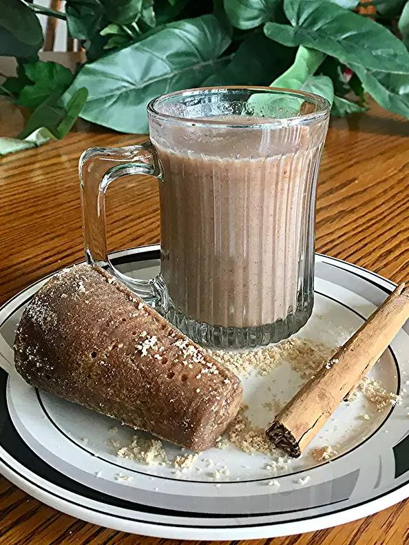

Atole

Classic beverage for the colder months.
Atole is a popular Mexican hot beverage, thickened with masa and flavored with cinnamon and brown sugar. Try this soothing beverage after dinner or in the afternoon with some cookies. You can be creative and add some pureed fruit if you wish!
Ingredients
- 1/2 cup masa (corn flour)
- 5 cups water
- 1 tablespoon ground cinnamon
- 5 tablespoons piloncillo (brown sugar cones)
- 1 tablespoon vanilla extract
Direction
- Place the masa, water, cinnamon and piloncillo in a blender. Blend until smooth, about 3 minutes.
- Pour the contents of the blender into a sauce pan and bring the mixture to boil over medium heat, stirring constantly. When the mixture reaches a boil, turn the heat to low and continue to whisk for 5 minutes.
- Remove the pan from the heat and stir in the vanilla. Pour into mugs and serve hot